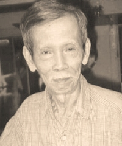

Chương Mười Bốn

royes ngày, 19 tháng 08 năm 2007
Bạn hiền thân mến,
Trong một bức thư, bạn có bảo tôi rằng bạn đang thèm nghe một ngôn ngữ miệt vườn trên dải đất Nam Kỳ Lục Tỉnh của chúng ta mà phải là một giọng rặc ròng thổ ngữ từ miền Bình Định vào tận miền Nam trước năm 1975, tức là vào thời kỳ khởi đầu cơn gió bụi trên dải đất Đông Dương.
Hôm nay, tôi có dịp tâm sự với bạn đây.
Khi viết xong quyển bút khảo Quê Nam Một Cõi thì tôi cũng vừa nhận được một ấn bản của quyển Chú Tư Cầu của Lê Xuyên do chị Dư Thị Diễm Buồn từ Sacramento gửi tặng. Quyển sách do nhà xuất bản Tiếng Vang tái bản, in trên giấy quý màu vàng tái của hoa kim liên. Tôi sẽ không nhận xét chi ly tỉ mỉ quyển này trong cuốn bút khảo Quê Nam Một Cõi của chúng ta đâu. Tôi phải để dành nó cho một cuốn bút khảo khác vào một vào dịp khác, cũng vẫn viết về văn chương của các cây bút gốc Nam Kỳ.

Tôi nhớ mang máng vào năm 1964 1965 gì đó, các làn sóng dư luận xôn xao về các cuốn tiểu thuyết của các nhà văn Chu Tử, Văn Quang, Thanh Nam, Tuấn Huy và những cuốn võ hiệp tiểu thuyết của Kim Dung chưa lắng dịu hẳn. Thì đùng một cái, những truyện dài đăng từng kỳ của Lê Xuyên đăng trên các nhật báo nổi tiếng ở Thủ Đô Sài Gòn bắt đầu gây một tiếng vang dữ dội. Cho nên trong cuộc viếng thăm nhà văn Võ Phiến, tôi được nghe họ Võ bảo:
-- Viết đối thoại rặc tiếng Nam Kỳ có ai bằng Lê Xuyên đâu.
Ông Lê Châu, chủ bút kiêm chủ nhiệm tạp san Bách Khoa đã tấm tắc với Thụy Vũ và tôi trong dip tôi theo chị tôi đến tòa soạn Bách Khoa lấy tiền nhuận bút:
-- Lê Xuyên viết đối thoại quyến rũ nhất. Eo ơi, hễ đọc tác phẩm của ông ấy là như gặp lời ăn tiếng nói mọi tầng lớp người Nam Kỳ.
Quyển tiểu thuyết của Lê Xuyên mà tôi đọc trước nhất là Vợ Thầy Hương, sau đó mới tới quyển Chú Tư Cầu, và sau hết là quyển Rặng Trâm Bầu. Không khí trong 3 quyển đó căng thẳng, khí hậu ngột ngạt. Nếu không nhờ lối viết đối thoại tinh tế tuyệt vời thì các tác phẩm của anh tuy đạt được phẩm chất nghệ thuật cao nhưng chỉ quyến rũ độc giả một cách chừng mực mà thôi.
Vào năm 1966, tôi tháp tùng chị Thụy Vũ tôi và ký giả Lê Phương Chi đi xi-nê tại rạp Rex để xem phim gì mà tôi quên tựa mất rồi. Hôm đó Lê Xuyên đi chung với cặp Nhã Ca & Trần Da Từ. Từ khi quyển Mèo Đêm của chị tôi trình làng thì cặp Từ Nhã và chị tôi là chỗ đồng nghiệp quen thân. Lê Xuyên có vóc dáng nho phong, khuôn mặt dịu dàng của một nhà mô phạm, nụ cười hiền lành, nhưng ánh mắt thật linh hoạt. Anh ăn mặc quá đơn giản: quần màu vỏ trái ô-liu đậm, áo sơ mi cụt tay trắng, đôi giày màu sô-cô-la, cườm tay trái đeo đồng hồ. Con người mát lành ngọt dịu như vậy mà văn chương lại cuồng phong bạo vũ đầy dao súng, máu me, ác mộng và tinh khí. Luôn tiện chị Nhã giới thiệu cho chị em tôi biét nhà văn Lê Xuyên. Để tỏ ra thân mật, chị tôi gọi anh bằng chú Tư Cầu. Còn anh gọi chị tôi bằng Mèo Đêm. Nếu gặp những bà nữ sĩ ưa cố chấp như chị Đỗ Phương Khanh (vợ Nhật Tiến) hay chị Thanh Phương thì họ sẽ bắt lỗi anh dám liệt họ vào hạng gái bán snack-bar cho lính Mỹ. Trong Mèo Đêm, Thuỵ Vũ có hai truyện ngắn viết vê các cô gái buông hương bán phấn hoặc gái gọi (call girls) trá hình các cô chiêu đãi viên trong các snack-bar ở Sài Gòn. Và chị ban cho họ cái hổn danh ''mèo đêm'', tức là những kẻ săn tình vào lúc đêm về. Hôm đó, chị tôi vẫn cười nói vui vẻ với Le Xuyên:
-- Chú Tư, hẹn hôm khác mình gặp nhau, nói chuyện nhiều hơn. Phim sắp
chiếu rồi. May quá, hôm nay tình cờ Thụy Vũ mới gặp một chú Tư Cầu bằng xương bằng thịt.
Anh Lê Xuyên vui vẻ:
-- Hôm khác nghen cô Mèo Đêm.
Khi xem phim xong, tôi bảo Lê Phương Chi:
-- Ông Lê Xuyên có vẻ hiền lành mà viết văn dữ dằn. Đây là thứ nước trà
màu vàng lợt mà là thứ trà quạu... Uống nó vào là chúng ta sẽ mất ngủ vì nó sẽ trở thành trà Thái Đức làm ẩm khách thức đái suốt đêm.
Trong cuốn 3 của bộ Văn Học Miền Nam, Võ Phiến nhận xét tổng quát về văn chương như sau:
Trong thời kỳ 1954-1975, các nhà văn gốc Nam khi nói đến chiến tranh trên đất nước thường chỉ nói về cuộc chiến chống Pháp mà tránh cuộc chiến chống cộng. Viết truyện như Bình Nguyên Lộc, Sơn Nam, viết ký như Vũ Bình, đều thế. Đến lượt Lê Xuyên, ông cũng thế. Mặt khác, các vị gốc Bắc thì chuyên về cuộc sống và con người đô thị, còn các vị gốc Nam thường viết về nông dân nông thôn. Lê Xuyên cũng thế.
Chuyện ấy dễ hiểu. Người Nam chưa biết qua chế độ cộng sản thì không mặn nồng với việc chống cộng ; người Bắc di cư, bao nhiêu văn nhân, nghệ sĩ trí thức vào Nam đều sống ở đô thị nên chỉ biết viết về đô thị.
Như vậy cốt truyện Lê Xuyên, thường xảy ra trong kháng chiến trước Genève, thường diễn ra ở miền quê, nhân vật thường là những nam nữ nông dân chất phác, ít học.
Lê Xuyên đặt các chuyện trong khung cảnh kháng chiến không phải là để nói về kháng chiến. Không có vậy đâu. Ông không hợp với các vấn đề chính trị. Trong khung cảnh thời đánh nhau với Pháp ông nói chuyện nam nữ yêu nhau thôi. Trong chuyện yêu nhau ông không chú trọng tới lòng thầm kín giấu giếm trong các ngóc ngách của quả tim, như các ông Hoàng Ngọc Phách, Khái Hưng khi viết Tố Tâm, Hồn bướm mơ tiên. Lê Xuyên, ông ấy chủ về phía tình yêu xác thịt theo cung cách hồn nhiên nhất (nhân vật nông dân mà).
Về chuyện xác thịt, ông không chủ trương những phô bày bạo tợn như D.H. Lawrence, Henry Miller... Lê Xuyên không làm mích lòng sở Kiểm duyệt. Ông chú trọng nhất là ở những màn biểu diễn bằng mồm. Đừng nên lẩn lộn ông Lê với chuyện giữa Clinton và Monica Lewinsky ; cái yêu đương bằng mồm của ông Lê tức là những trang đối thoại dài dằng dặc xung quanh mục tiêu chính của ái tình. Khi nam nữ đã dàn binh bố trận xong thì tác giả lánh mặt. Trong những Chú Tư Cầu, Vợ thầy Hương, Rặng trâm bầu v.v..., sự tình rộn ràng ríu rít, đầy lời như thế.
Văy Lê Xuyên viết truyện có chiến tranh mà không phải truyện chién tranh, có nông dân lầm than mà không phải truyện xã hội, có ái tình mà không phải truyện tình cảm. Chẳng qua là chuyện ''gay cấn'' để độc giả đọc chơi lúc buồn tình, đọc cho nóng máy trong chốc lát rồi bỏ qua thôi chứ gì.
°
° °
Chú Tư Cầu là tác phẩm đầu tay của Lê Xuyên. Chàng viết về cuộc đời tình ái của một chàng nông dân ngây thơ, nhân hậu, có số đào hoa, không ve vãn gái mà gái vẫn chạy theo quyến rũ chàng rần rần. Trước hết là cô Phấn, bạn gái cùng quê của chàng ở Rạch Chiếc (gần quận lỵ Trà Ôn). Cô vốn táo bạo, dám hiến thân cho chàng không cần lịnh mẹ, rồi rủ chàng lên Sài Gòn để xây tổ uyên ương, cốt tránh cuộc hôn nhân cưỡng ép do mẹ cô sắp đặt khi bà chưa qua đời. Nhưng khi tới Cần Thơ, cô bị tên Khách Trú trẻ tuổi tên Lâm Sanh quyến rũ. Hắn bàn điều hơn lẽ thiệt cho cô nghe vì chốn thị thành không phải làm chốn dung thân của một kẻ đôn hậu, quê mùa như Tư Cầu. Cho nên vì tương lai của Tư Cầu, Phấn dùng kế gạt chàng xuống tàu để trở về quê. Dè đâu, chàng đi lộn tàu lên Nam Vang. Còn Phấn không còn mặt mũi nào để trở về quê nên đành theo làm vợ người Khách Trú kia. Thật ra, trước phong vận thanh tân của kẻ thị thành như tên ngoại kiều kia, Phấn cũng xiêu lòng làm vợ hắn.
Dọc đường, Tư Cầu gặp một ông khách đồng hành đứng tuổi xưng là chú Bảy. Chú ta cám cảnh thương tình Tư Cầu nên khi tới Nam Vang chú giới thiệu chàng giúp việc cho tiệm cơm người chị ruột chú là cô Năm. Tại Nam Vang, Tư Cầu có nhiều dịp tiếp xúc với phường trộm cắp, phường dao búa, và được lòng cô Ba Xá Lỵ một gái nặc nô xinh đẹp, uy trấn một góc xã hội du côn nho nhỏ trên đất Chùa Tháp này. Cô ta mê chàng vì tấm lòng nhân hậu và hào hiệp của chàng, tìm mọi cách để quyến rũ chàng. Rồi cả hai tằng tịu say mê nhau. Nhưng sau một thời gian sống hạnh phúc trên đất Chùa Tháp, vì nhớ quê, Tư Cầu xin trở về quê; chàng có rủ cô Ba theo, nhưng cô ta biết rằng chốn ruộng đồng không phải là chốn môi sinh thích thú của mình nên từ chối.
Tư Cầu về quê, được mẹ chàng cho chàng biết Phấn lấy chồng Khách Trú giàu, có về đây vài lần và lần nào cũng đến thăm hỏi chàng. Cô ta giúp đỡ gia đình chàng trong cơn ngặt nghèo nên bà rất cảm kích cô ta lắm. Rồi cha mẹ chàng buộc chàng phải cưới cô Thơm làm vợ. Cô này vốn là gái Việt gốc Miên rất được chàng yêu thương quý trọng. Cuộc sống lứa đôi của chàng tạm bình yên hạnh phúc.
Nhưng cơn gió bụi bắt đầu xảy ra trên đất nước. Sài Gòn bị dội bom. Phấn về quê để gặp Tư Cầu, rủ chàng đến chỗ khác xây dựng lại cuộc sống lứa đôi đã từng dang dở. Cô cũng cho chàng biết đứa con trai của cô vốn là con ruột của chàng. Cô Thơm bắt gặp quả tang cả hai lén lút tâm sự nhau nên ghen lồng lộn. Rốt cuộc Phấn phải trở về Sài Gòn, tiếp tục sống với người chồng ngoại kiều của mình như cũ.
Rồi đó, trong các Sóc Thổ, người Miên nổi dậy phong trào ''cáp duồng'' (với mục đích giết sạch người Việt). Cô Thơm dù vốn là gốc Miên nhưng đã từng được cha mẹ Việt Nam nuôi từ thở ấu thơ, rồi khi lớn lên lấy chồng Việt Nam nên cũng bị người Miên cho là thứ Miên gian. Trong một chuyến về quê thăm cha mẹ nuôi, cô bị bọn miên hãm hiếp và bị chúng hạ sát. Tư Cầu điên tiết giết chúng để báo thù cho vợ.
Rồi Tư Cầu nghe theo lời Ba Kiên gia nhập vào nhóm du kích kháng chiến, bị bắt giải lên Sài Gòn, rồi được chuyển qua dinh cơ của một trung úy người Pháp có phận sự canh giữ các tù nhân trước khi giải họ đi Côn Đảo. Không ngờ viên sĩ quan này là chồng hờ của cô Ba Xá Lỵ. Tình cũ gặp nhau, cô Ba Xá Lỵ hết lòng giúp đỡ Tư Cầu để được gần gũi ân ái với chàng. Chàng chỉ làm tạp dịch nhẹ nhàng thôi. Nhưng rồi một hôm nọ, Tư Cầu theo nhóm tù nhân đến tiệm bán cây mà viên trung úy đã đặt tiền mua để chất cây lên đoàn vận tải quân xa đem về nhà hắn. Tình cờ Tư Cầu gặp Phấn, vợ tên Khách trú Lâm Sanh, bây giờ hắn ta trở thành chủ nhân tiệm bán cây ấy. Phấn gạn hỏi nguồn cơn người yêu cũ của mình, rồi hiệp cùng cô Ba Xá Lỵ giúp đỡ Tư Cầu vượt vòng phong tỏa của viên trung úy chồng hờ của cô Ba. Tại nhà riêng do Phấn thuê, Tư Cầu bị lính tuần tiễu bố ráp nên bị bắt đưa về bót cảnh sát Catinat để cho bọn bao bố nhìn mặt. Những tên chỉ điểm đội bao bố kia (để khỏi bị ai biết mặt) vì không biết chàng có dính dáng với bọn Việt Minh công tác ở thành phố hay không nên không thể xác nhận chàng là Việt Minh nội thành và cho nên chàng được tha.
Tư Cầu lại về quê. Tình hình ở đây căng thẳng nên chàng nhập vào toán du kích kháng chiến địa phương. Trong cuộc tấn công quân xa của lính Tây, Tư Cầu cùng đồng bọn hạ sát được tên chồng sĩ quan hờ của cô Ba Xá Lỵ. Nhưng chàng không cứu được cô. Tên chánh trị viên giết cô ta. Tư Cầu toan báo thù cho người yêu của mình nhưng hắn đã kịp thời cao bay xa chạy mất rồi.
°
° °
Như bạn biết: theo truyền thống các cây bút Nam Kỳ Lục Tỉnh của chúng ta, Lê Xuyên dù không có khuynh hướng tải đạo, nhưng anh thường cho các nhân vật chánh của anh ăn ở theo đạo nghĩa, phô bày tấm lòng nhân hậu, bao dung một cách hồn nhiên, không cố gắng. Trên đất Nam Vang, Tư Cầu chống cự với kẻ mạnh độc dữ để binh vực kẻ yếu hiền lành. Chàng bao dung kẻ thù toan hãm hại chàng làm cho kẻ thù hồi tâm kính mến chàng. Tư Cầu vốn dốt nát, chỉ biết đọc quọt quẹt năm ba chữ quốc ngữ, nào có biết nhân, nghĩa, lễ, trí tín hay tam cang ngũ thường do ông Khổng Tử bày ra đâu. Anh không đọc kinh Phật bao giờ, nhưng anh không làm ác, không lấy oán trả oán. Vợ anh bị bọn Miên cưỡng hiếp và hạ sát, nhưng khi thấy cô gái Miên bị Ba Kiên, anh trai của chàng toan bề cưỡng dâm chàng phản kháng ngay, không muốn anh mình gây ác nghiệp. Cho nên Ba Kiên phải buông tha cô thiế nữ Miên. Trong thời kỳ Nhật đảo chánh, có hai tên lính Tây bị chìm tàu tắp vào Rạch Chiếc, Ba Kiên toan đi báo cho nhà chức trách, nhưng Tư Cầu hợp cùng nhóm người nhân từ đòi phóng thích lính Tây. Khi được Cô Ba Xá Lỵ giúp chàng vượt ngục, chàng nằng nặc cô giúp luôn chú Tám, người bạn tù đã cùng cùng đồng cam cộng khổ với chàng.
Tư Cầu theo toán du kích kháng chiến chống Tây là cảm thấy mình phải làm theo thiên lương soi sáng mình một cách hồn nhiên, không nghĩ xa, không nghĩ gần, cũng không được ai huấn luyện lòng ái quốc thương dân. Do đó, chàng gần ông Thích Ca Cồ Đàm cùng ông LãoTử và ông Trang Tử hơn ông Khổng Tử. Chàng lạc loài với các ông chuộng trí thức Tây Phương cùng dân khoa bản. Chàng cũng không thể là thần tượng huy hoàng cho các cô ôm lý tưởng môn đăng hộ đối và có thói ưa chuộng phi cao đẳng bất thành phu phụ. Chàng là người tình lý tưởng của các cô gái táo tợn, liều lĩnh, nhưng có thiên lương trong sáng, biết nắm bắt được cái giá trị chân thật của con người, không cần tính toán chi ly, không cần so sánh dài dòng. Hồ Biểu Chánh khi viết văn theo kiểu văn dĩ tải đạo còn dựa theo khuôn nếp, nguyên tắc, lời khuyên răn dạy bảo của các bậc thánh hiền. Lê Xuyên không theo ông hiền triết nào, không nương tựa rêu rao theo khuynh hướng đạo nghĩa nào. Anh viết khơi khơi mà vẫn làm cho độc giả xúc động, yêu mến lớp dân quê hiền làngh, lòng ngay dạy thẳng, không có chút ý nghĩ quanh co đo đắn trước những công việc phải làm.
Lê Xuyên không viết văn dài dòng: không cần tả cảnh, tả người, tả vật, tả tâm tâm trạng, tức là không tả những cái mà giới bình dân cho là lòng vòng không hợp với khiếu thưởng ngoạn của lớp độc giả với lòng dạ rổng rang, suông thẳng nhưng ống nứa ống tre. Anh thích kể chuyện, ưa cho các nhân vật của mình chuyện trò vòng vo Tam quốc, cằn nhằn dai dẳng, cà khịa rỉ rả, cãi lẫy tưng bừng, có khi chửi bới huyên náo. Anh không cần viết văn đâu. Anh cũng thích kể chuyện lắm đâu. Anh chỉ thích cho các nhân vật của mình có nhiều dịp đối thoại tuồn tuột, ngon ơ. Lời nói của các nhân vật biểu lộ cá tính của các đương sự luôn cả chân dung của họ cùng bối cảnh chung quanh họ hiện mập mờ vài nét tạo hình khái quát, nhưng cũng đủ chạm khắc vào ấn tượng độc giả sành điệu. Trong Chú Tư Cầu, Lê Xuyên dùng ngôn ngữ Nam Kỳ Lục Tinh vào thuở tiền chiến, không pha ngôn ngữ của thời Đệ nhất Cộng Hòa hay vào thời Đệ nhị Cộng Hòa. Thí dụ: rắc rối không biết đâu mà rờ (tức là không thể đoán trúng được), làm cho xất bất xang bang (tức làm cho khổ sở điêu đứng), đụng đâu xâu đó (tức là hễ gặp dịp là nắm lấy ngay không cần biết tốt xấu, lợi hại), mấy con nập nợn (tức là mấy cô thiếu nữ dâm đảng lẳng lơ), anh làm cái điệu đó thì mụ nội em cũng lìa (tức là làm cho em điêu đùng, gặp cảnh gia đình ly tán)... Anh không pha thêm những tiếng lóng ( les patois) mà người Bắc di cư và người Nam bản xứ pha trộn nhau như: sức mấy, bỏ qua đi Tám, lấy le, thằng cà chớn, oan ôi ông Địa, lạng quạng, mút mùa lệ thủy, đi ăn chè ở nhà Bè (tức là lén lút đi ngoại tình, cụm tư này lấy sự tích nhạc sĩ Phạm Duy cùng nữ ca sĩ Khánh Ngọc đi Nhà Bè để ngoại tình ; nhưng khi bi lính kiểm tục và thừa phát lại bắt đuợc, cả hai khai rằng họ đi Nhà Bè để ăn chè)...
°
° °
Ngôn ngữ miền Nam chánh gốc, thuần túy hay ngôn ngữ phối hợp của người Bắc di cư và của người Nam bổn xứ đều quyến rũ như nhau: sống động và gợi cảm gấp đôi ngôn ngữ kiều diễm cao sang trong các tác phẩm của nhóm Tự Lực Văn Đoàn vì chúng dễ đi sâu vào tâm hồn dân tộc ở mọi cấp bậc và mọi thành phần trong xã hội. Hồ Biểu Chánh viết văn mà không hề lộn ngôn ngữ Bắc Kỳ. Bình Nguyên Lộc, Sơn Nam cũng vậy. Nhưng hai anh Bình Nguyên Lộc và Sơn Nam chỉ thành công về phương diện kỹ thuật viết văn, ở sự diễn tả tình tiết, nhưng ngôn ngữ và cách đối thoại trong văn chương họ không có linh hồn sống động, không có sức hấp dẫn bằng ngôn ngữ trong văn chương và cách đối thoại của Lê Xuyên. Họ Lê chịu khó lắng tai nghe ngôn ngữ trong dân gian, nhất là nơi sinh hoạt của lớp bình dân, lớp người ở cấp bậc thấp nhất trong giới hạ lưu của xã hội. Cái thành công của anh nhất định là phải có. Trong giới điện ảnh của nước Pháp, người viết đối thoại tài hoa lỗi lạc nhất là Michel Audiard. Ông này chị khó đi tìm ngôn ngữ trong dân gian nên mới chiếm một địa vị cao chót vót trong ngành viết đối thoại như thế.
Ở Miền Nam Việt Nam của chúng ta, trước năm 1975, những cây viết gốc Nam Kỳ như Ngọc Linh, Sĩ Trung không viết thuần túy văn chương Nam Kỳ. Những đoạn đối thoại dài ngoằng của họ càng làm độc giả bực mình, cho nên tên tuổi họ chỉ đứng bên lề văn học sử. Duy người Bắc như Thanh Tâm Tuyền trong truyện dài Cát Lầy, Viên Linh trong truyện dài Mã Lộ đều viết đối thoại bằng ngôn ngữ Nam Kỳ, đều thành công khả quan. Nhà văn Võ Phiến gán cho các nhân vật người Nam trong truyện dài Đàn Ông và trong truyện dài Một Mình cái ngôn ngữ Nam Kỳ cực kỳ quyến rũ. Giờ đây, ở hải ngoại, dù là cha Quảng Ngãi (nhà chí sĩ Hồng Tiêu Nguyễn Đức Huy), mẹ Quảng Nam (nữ sĩ Tùng Long), nhưng được sinh trưởng ở Sài Gòn nên nhà văn Nguyễn Đức Lập viết giọng điệu Nam Kỳ cực kỳ duyên dáng bỏ xa các cây bút gốc Nam Kỳ khác. Tuy nhiên, tất cả những nhà văn này làm sao tìm lai cái ngôn ngữ Nam Kỳ trước cuộc chiến tranh Đông Dương giữa Pháp và Việt Minh như Lê Xuyên với các ngôn ngữ mà giới phu phen ở đô thị, giới nông dân ở thôn quê, giới thương hồ trên sông nước phù sa thường dùng như:
Thôi thì, nhưng kẻ sanh sau đẻ muộn như chúng ta, đã trưởng thành vào 5 năm cuối của thập niên 50, chúng ta có thể chắc mót, lượm lặt ngôn ngữ Nam Kỳ của chúng ta vào thời biển lặng sông trong xa xưa được bao nhiêu hay bấy nhiêu. Có còn hơn không, phải không bạn?
Cổ Nguyệt Đường, hè năm Đinh Hợi (2007),
Tiết thịnh hạ
Hồ Trường An